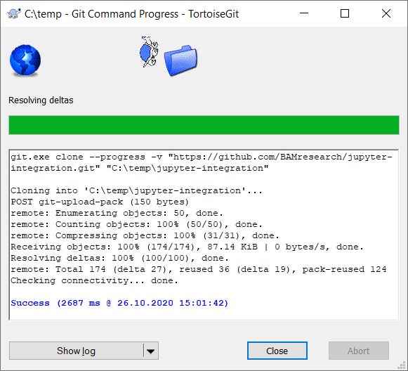

Versionierung mit GIT¶
Eine sehr gute Einführung Was ist Versionskontrolle? ist bei Atlassian zu finden, die auch Software und Server für Git anbieten, die aber hier nicht verwendet werden.
Ein komplettes Buch über Git ist sogar frei verfügbar.
Allgemeine Bezeichnungen, Glossar¶
Projekt:
Ein Dateiordner unter GIT-Versionskontrolle, das ein oder mehrere Jupyter-Notebooks, Python-Quellcodedateien sowie die zugehörigen Daten enthalten kann.Klonen:
Das erstmalige Herunterladen eines Projekts vom Repository. Dabei wird auch die gesamte Änderungshistorie kopiert.Commit:
Das Verbuchen vorgemerkter Änderungen inklusive einer kurzen Beschreibung, Zeitstempel und Nutzername werden automatisch hinzugefügt. Nutzername und Emailadresse können zentral oder für jedes Repositorium individuell hinterlegt werden.
Verwendung von TortoiseGit¶

Da Git als Versionsverwaltungsprogramm auf Dateiebene arbeitet, fügt TortoiseGit zusätzliche Kontextmenüoptionen für Dateien und Verzeichnisse unter Windows hinzu.
TortoiseGit kann unabhängig von Jupyter(Lab) für jedes Git-Repository unter Windows verwendet werden. Es integriert sich in das Kontextmenü des Explorers und führt Operationen auf Dateiebene durch, ganz ähnlich wie die entsprechenden Kommandozeilenbefehle von Git.
Anleitungen und Einführungen¶
Online existieren schon zahlreiche (Video-)Anleitungen und Hilfestellungen, daher wird hier nur darauf verwiesen:
Klonen - Erstmaliges Herunterladen eines existierenden Projekts¶

Die Webseite mit dem Git-Repository besuchen, z.B. ein Projekt auf github.com. Dort auf den Knopf Code klicken wodurch sich das Menü öffnet mit der Adresse, die zum sog. Klonen des Projekts genutzt werden kann (siehe Screenshot). Durch Anklicken des Symbols neben der Adresse, wird diese in die Zwischenablage kopiert.
 Mit dem Windows-Explorer in den Zeilordner navigieren und darin mit der rechten Maustaste das Kontextmenü öffnen und dort die Option Git Clone… auswählen.
Mit dem Windows-Explorer in den Zeilordner navigieren und darin mit der rechten Maustaste das Kontextmenü öffnen und dort die Option Git Clone… auswählen.Im Feld URL die HTTPS-Adresse des Projekts eintragen. Sie müsste schon eingetragen sein, wenn die Adresse zuvor schon in die Zwischenablage kopiert wurde (vorheriger Punkt 2).

 Nach dem Bestätigen des Dialogs mit OK, wird das Projekt heruntergeladen und am Ende erscheint ein Textfenster mit Statusinfos und der Meldung Success in blauer Schrift. Mit der Schaltfläche Close kann das Fenster nun geschlossen werden.
Add - Dateien hinzufügen, deren Änderungen verfolgen¶
Rechts-Klick auf die Datei -> TortoiseGit -> Add… auswählen. Darauf folgend erscheint ein Fenster mit einer kurzen Übersicht der ausgewählten Dateien, die mit OK bestätigt wird. Abschließend erscheint ein kleines Fenster, welches das erfolgreiche Hinzufügen bestätigt.
Die Datei ist nun mit einem blauen Plus-Symbol markiert, d.h. sie ist für den nächsten Commit vorgemerkt aber noch nicht auf den Server geladen (im sog. Staging-Bereich).
Commit - Änderungen verbuchen¶
Am versionierten Ordner das Kontextmenü aufrufen (Rechts-Klick) und Git Commit -> “master”… auswählen.
Beim ersten Aufruf erscheint ein Fehler, da der Benutzername und die Email-Adresse noch nicht gesetzt sind, beides aber für jeden Commit erforderlich ist. Hier bestätigen und den eigenen Namen sowie die Emailadresse eintragen und abspeichern.
Im folgenden Schritt erscheint ein Fenster mit einer Zusammenfassung der zu verbuchenden Änderungen im unteren Bereich und einem Textfeld für die Beschreibung dieser Änderungen im oberen Bereich. Hier bitte eine möglichst kurze und aussagekräftige Beschreibung der durchgeführten Änderungen eintragen.
Die Datei ist nun mit einem grünen Häkchen markiert, d.h. sie ist verbucht in der Historie, aber noch nicht auf den Server geladen, bzw. synchronisiert.
Push - Den Server aktualisieren (erstmalig zu neuem Projekt)¶
Im Kontextmenü des Ordners auswählen: TortoiseGit->Push…
Im folgenden Dialog die Voreinstellungen belassen und ein Haken setzten bei Set upstream/track remote branch, um den aktuellen Zweig master als Standard zu setzen für alle weiteren Aktionen.
Mit OK bestätigen
Mit dem Server synchronisieren (jedes weitere Mal)¶
Im Kontextmenü des Ordners Git Sync… auswählen
Zunächst mögliche Änderungen vom Server laden mittels Pull.
Wenn das erfolgreich war, die eigenen Änderungen auf den Server laden mittels Push.